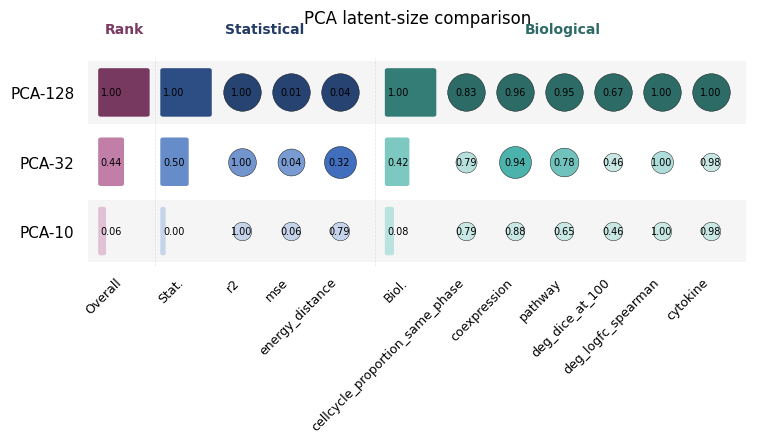

Computing the metrics#
ReconEval scores a (true, reconstructed) AnnData pair against the
statistical, biological and perturbational metrics used in the paper.
This page covers the user-facing API one metric at a time, then the
one-call wrapper and the rank-percentile aggregation used for
cross-method comparisons.
The same code applies to any reconstruction output — PCA, AE, VAE, foundation-model + decoder, perturbation prediction. Swap the loader cell for your own data and the rest of the notebook is unchanged.
import sys, warnings
from pathlib import Path
# Prefer the public src over any pip-installed sc_reconstruction (which may
# come from a stale private clone in the active env).
sys.path.insert(0, str(Path("..").resolve() / "src"))
import numpy as np
import pandas as pd
from anndata import AnnData
from sc_reconstruction.metrics import (
load_cell_cycle_genes, load_cytokine_dict_from_csv, load_progeny,
metric_r2, metric_mse, metric_energy_distance,
metric_cellcycle, metric_pathway, metric_coexpression, metric_deg, metric_cytokine,
compute_statistical_metrics, compute_all_metrics, aggregate_rank_percentile,
)
warnings.filterwarnings("ignore")
/home/icb/xiaotong.fu/miniconda3/envs/cstm_scvi_env/lib/python3.12/site-packages/scanpy/_utils/__init__.py:35: FutureWarning: `__version__` is deprecated, use `importlib.metadata.version('anndata')` instead.
from anndata import __version__ as anndata_version
/home/icb/xiaotong.fu/miniconda3/envs/cstm_scvi_env/lib/python3.12/site-packages/scanpy/__init__.py:24: FutureWarning: `__version__` is deprecated, use `importlib.metadata.version('anndata')` instead.
if Version(anndata.__version__) >= Version("0.11.0rc2"):
/home/icb/xiaotong.fu/miniconda3/envs/cstm_scvi_env/lib/python3.12/site-packages/scanpy/readwrite.py:15: FutureWarning: `__version__` is deprecated, use `importlib.metadata.version('anndata')` instead.
if Version(anndata.__version__) >= Version("0.11.0rc2"):
/home/icb/xiaotong.fu/miniconda3/envs/cstm_scvi_env/lib/python3.12/site-packages/cudf/utils/_ptxcompiler.py:64: UserWarning: Error getting driver and runtime versions:
stdout:
stderr:
Traceback (most recent call last):
File "<string>", line 4, in <module>
File "/home/icb/xiaotong.fu/miniconda3/envs/cstm_scvi_env/lib/python3.12/site-packages/numba_cuda/numba/cuda/cudadrv/driver.py", line 314, in __getattr__
raise CudaSupportError("Error at driver init: \n%s:" %
numba.cuda.cudadrv.error.CudaSupportError: Error at driver init:
CUDA driver library cannot be found.
If you are sure that a CUDA driver is installed,
try setting environment variable NUMBA_CUDA_DRIVER
with the file path of the CUDA driver shared library.
:
Not patching Numba
warnings.warn(msg, UserWarning)
/home/icb/xiaotong.fu/miniconda3/envs/cstm_scvi_env/lib/python3.12/site-packages/cudf/utils/gpu_utils.py:62: UserWarning: Failed to dlopen libcuda.so.1
warnings.warn(str(e))
Example pair#
We use the tutorial-sized LuCA panel that ships with the repo (500 cells × 643 genes, already normalised + log1p, gene symbols overlap the cell-cycle / PROGENy / cytokine resources). We build a paired example by splitting it into control / perturbed halves, perturbing 30 random genes in the perturbed half, and producing a “reconstructed” copy by adding small Gaussian noise to the truth.
import scanpy as sc
FROZEN = Path("../analysis/data/frozen")
CC_FILE = FROZEN / "regev_lab_cell_cycle_genes.txt"
CYTO_CSV = FROZEN / "cytokine_act_merged.csv"
# LuCA demo: 500 cells × 643 genes (log-normalised, gene-symbol indexed).
luca = sc.read_h5ad(FROZEN / "luca_demo.h5ad")
genes = luca.var_names.tolist()
var = pd.DataFrame(index=genes)
# Split LuCA in half: control vs perturbed.
rng = np.random.default_rng(0)
perm = rng.permutation(luca.n_obs)
half = luca.n_obs // 2
X_ctrl_base = luca.X[perm[:half]].astype(float)
X_pert_base = luca.X[perm[half:]].astype(float)
# Truth: control + a 30-gene additive shift in the perturbed half.
de_idx = rng.choice(len(genes), size=30, replace=False)
X_ctrl = X_ctrl_base.copy()
X_pert = X_pert_base.copy()
X_pert[:, de_idx] += 1.5 # shift on log scale (~4-5x fold change)
# Reconstruction: truth + small Gaussian noise.
Xh_ctrl = X_ctrl + rng.normal(0, 0.2, size=X_ctrl.shape)
Xh_pert = X_pert + rng.normal(0, 0.2, size=X_pert.shape)
adata = AnnData(X_pert.astype(np.float32), var=var)
recon = AnnData(Xh_pert.astype(np.float32), var=var)
ctrl = AnnData(X_ctrl.astype(np.float32), var=var)
ctrl_recon = AnnData(Xh_ctrl.astype(np.float32), var=var)
# Metric resources.
s_genes, g2m_genes = load_cell_cycle_genes(CC_FILE)
progeny = load_progeny(organism="human")
cytokines = load_cytokine_dict_from_csv(CYTO_CSV, celltype="B_cell", fdr_threshold=0.05)
print(adata)
print(f"\n{len(s_genes)} S genes, {len(g2m_genes)} G2M genes")
print(f"{progeny['source'].nunique()} PROGENy pathways, {len(cytokines)} cytokines")
AnnData object with n_obs × n_vars = 250 × 643
43 S genes, 54 G2M genes
14 PROGENy pathways, 43 cytokines
Statistical metrics#
Each metric_* takes (truth, reconstruction) and returns a scalar. R² is higher-is-better,
the others are lower-is-better.
print(f"R^2 = {metric_r2(adata, recon):.4f}")
print(f"MSE = {metric_mse(adata, recon):.4f}")
print(f"Energy distance = {metric_energy_distance(adata, recon):.4f}")
compute_statistical_metrics(adata, recon)
R^2 = 0.9988
MSE = 0.0401
Energy distance = 0.1725
{'r2': 0.9988042712211609,
'mse': 0.040113721042871475,
'energy_distance': 0.1724863052368164}
Biological metrics#
Each biological metric scores the truth and the reconstruction with the same procedure and correlates them. Resources (gene lists, pathway weights, cytokine signatures) are passed explicitly so the call is reproducible offline.
# Cell-cycle phase agreement.
cc = metric_cellcycle(adata, recon,
s_genes=s_genes, g2m_genes=g2m_genes,
min_cells=10)
print("proportion_same_phase =", round(cc["proportion_same_phase"], 4))
print("proportion_mean_diff =", round(cc["proportion_mean_diff"], 4))
proportion_same_phase = 0.648
proportion_mean_diff = 0.128
# PROGENy pathway scores per cell, correlated across cells per pathway.
pathway_corr = metric_pathway(adata, recon,
progeny_model=progeny,
correlation_measure="spearman",
min_cells=10, overlap_threshold=3)
print(f"pathway corr (mean over pathways) = {pathway_corr:.4f}")
pathway corr (mean over pathways) = 0.8614
# MSigDB Hallmark gene-set co-expression. Omit `geneset_dict` to fetch from omnipath.
coexpr = metric_coexpression(adata, recon,
correlation_measure="spearman",
min_cells=10, overlap_threshold=3)
print(f"coexpression similarity = {coexpr:.4f}")
2026-06-11 00:50:33 | [INFO] Downloading data from `https://omnipathdb.org/queries/enzsub?format=json`
2026-06-11 00:50:33 | [INFO] Downloading data from `https://omnipathdb.org/queries/interactions?format=json`
2026-06-11 00:50:33 | [INFO] Downloading data from `https://omnipathdb.org/queries/complexes?format=json`
2026-06-11 00:50:33 | [INFO] Downloading data from `https://omnipathdb.org/queries/annotations?format=json`
2026-06-11 00:50:34 | [INFO] Downloading data from `https://omnipathdb.org/queries/intercell?format=json`
2026-06-11 00:50:34 | [INFO] Downloading data from `https://omnipathdb.org/about?format=text`
2026-06-11 00:50:34 | [INFO] Downloading annotations for all proteins from the following resources: `['MSigDB']`
coexpression similarity = 0.9537
# DEG recovery: compare true (pert-vs-ctrl) DEGs against reconstructed (pert-vs-ctrl) DEGs.
deg = metric_deg(adata, recon,
ref_true=ctrl, ref_pred=ctrl_recon,
method="wilcoxon", dice_k=[50, 100], min_cells=10)
for k, v in deg.items():
print(f" {k:36s} = {v}")
... storing 'group' as categorical
... storing 'group' as categorical
... storing 'group' as categorical
true_deg_dice_50 = 0.9375
true_deg_dice_100 = 0.9375
true_deg_pearson = nan
true_deg_spearman = nan
true_deg_pearson_orig_50 = 0.9999334812164307
true_deg_spearman_orig_50 = 0.9982202447163514
true_deg_pearson_orig_100 = 0.9999334812164307
true_deg_spearman_orig_100 = 0.9982202447163514
true_mean_genediff_pearson = 0.999174952507019
true_mean_genediff_spearman = 0.808895023954095
pred_deg_dice_50 = 0.9523809523809523
pred_deg_dice_100 = 0.9523809523809523
pred_deg_pearson = nan
pred_deg_spearman = nan
pred_deg_pearson_orig_50 = nan
pred_deg_spearman_orig_50 = nan
pred_deg_pearson_orig_100 = nan
pred_deg_spearman_orig_100 = nan
pred_mean_genediff_pearson = 0.9983597993850708
pred_mean_genediff_spearman = 0.7283951136943941
# Cytokine activity: score each Immune-Dictionary signature on both sides, correlate.
cyto = metric_cytokine(adata, recon,
cytokine_dict=cytokines,
correlation="spearman",
min_genes=5)
print(f"cytokine corr (Spearman) = {cyto:.4f}")
cytokine corr (Spearman) = 0.9341
All metrics in one call#
compute_all_metrics runs every metric whose required inputs are available
and returns one flat {metric_name: score} dict. Metrics with missing
inputs come back as NaN.
scores = compute_all_metrics(
adata, recon,
s_genes=s_genes, g2m_genes=g2m_genes,
progeny_model=progeny,
cytokine_dict=cytokines,
deg_refs=(ctrl, ctrl_recon),
)
pd.Series(scores, name="score").to_frame()
2026-06-11 00:50:44 | [INFO] Downloading annotations for all proteins from the following resources: `['MSigDB']`
... storing 'group' as categorical
... storing 'group' as categorical
... storing 'group' as categorical
| score | |
|---|---|
| r2 | 0.998804 |
| mse | 0.040114 |
| energy_distance | 0.172486 |
| cellcycle_proportion_same_phase | 0.656000 |
| coexpression | 0.955467 |
| pathway | 0.897377 |
| deg_dice_at_100 | 0.952381 |
| deg_logfc_spearman | 0.728395 |
| cytokine | 0.934066 |
Rank-percentile across methods#
To rank several methods against each other, stack per-metric scores into a DataFrame
(rows = methods, columns = metrics) and call aggregate_rank_percentile. The paper formula is
with rank 1 = best. Direction (higher- vs lower-is-better) comes from HIGHER_IS_BETTER.
Below we fit PCA at three latent sizes (10, 32, 128) on the truth and use its inverse-transform as the reconstruction. The expected outcome is a clean monotonic ranking: PCA-128 should win on most metrics, PCA-10 should be worst.
from sklearn.decomposition import PCA
dims = [10, 32, 128]
scored = {}
for d in dims:
pca = PCA(n_components=d, random_state=0).fit(np.vstack([adata.X, ctrl.X]))
recon_d = AnnData(pca.inverse_transform(pca.transform(adata.X)).astype(np.float32), var=var)
ctrl_recon_d = AnnData(pca.inverse_transform(pca.transform(ctrl.X )).astype(np.float32), var=var)
scored[f"PCA-{d}"] = compute_all_metrics(
adata, recon_d,
s_genes=s_genes, g2m_genes=g2m_genes,
progeny_model=progeny,
cytokine_dict=cytokines,
deg_refs=(ctrl, ctrl_recon_d),
)
raw = pd.DataFrame(scored).T
print("raw scores:")
print(raw.to_string(float_format=lambda x: f"{x:.4f}"))
rp = aggregate_rank_percentile(raw)
print("\nrank-percentiles (1.0 = best):")
print(rp.round(3))
print("\noverall (mean rp across metrics):")
print(rp.mean(axis=1).sort_values(ascending=False).round(3))
2026-06-11 00:50:54 | [INFO] Downloading annotations for all proteins from the following resources: `['MSigDB']`
... storing 'group' as categorical
... storing 'group' as categorical
... storing 'group' as categorical
2026-06-11 00:51:04 | [INFO] Downloading annotations for all proteins from the following resources: `['MSigDB']`
... storing 'group' as categorical
... storing 'group' as categorical
... storing 'group' as categorical
2026-06-11 00:51:14 | [INFO] Downloading annotations for all proteins from the following resources: `['MSigDB']`
... storing 'group' as categorical
... storing 'group' as categorical
... storing 'group' as categorical
raw scores:
r2 mse energy_distance cellcycle_proportion_same_phase coexpression pathway deg_dice_at_100 deg_logfc_spearman cytokine
PCA-10 1.0000 0.0574 0.7947 0.7880 0.8835 0.6493 0.4615 0.9967 0.9835
PCA-32 1.0000 0.0416 0.3173 0.7920 0.9351 0.7825 0.4615 0.9970 0.9835
PCA-128 1.0000 0.0136 0.0429 0.8320 0.9649 0.9452 0.6667 0.9994 1.0000
rank-percentiles (1.0 = best):
r2 mse energy_distance cellcycle_proportion_same_phase \
PCA-10 0.0 0.0 0.0 0.0
PCA-32 0.5 0.5 0.5 0.5
PCA-128 1.0 1.0 1.0 1.0
coexpression pathway deg_dice_at_100 deg_logfc_spearman cytokine
PCA-10 0.0 0.0 0.25 0.0 0.25
PCA-32 0.5 0.5 0.25 0.5 0.25
PCA-128 1.0 1.0 1.00 1.0 1.00
overall (mean rp across metrics):
PCA-128 1.000
PCA-32 0.444
PCA-10 0.056
dtype: float64
Funky heatmap#
funky_heatmap packages the Fig 2 summary view as a one-call plot. Pass the
raw compute_all_metrics matrix (rows = methods, columns = metrics): each
cell is coloured by the per-column rank-percentile (1.0 = best), a white
circle’s area scales with that rank-percentile, the raw score is annotated
in the cell, and the right-hand columns aggregate per family
(“statistical”, “biological”, “perturbational”) plus an “overall” mean.
from sc_reconstruction.metrics import funky_heatmap
import matplotlib.pyplot as plt
ax = funky_heatmap(raw, title="PCA latent-size comparison")
plt.show()

For batch evaluation at paper scale (zarr stores, multiprocessing), see
sc_reconstruction.metrics.base_eval (MetricsBatchEvaluator) — not
part of the public API but reachable when needed.